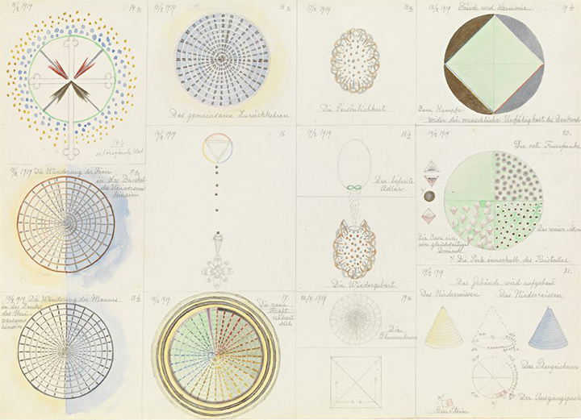
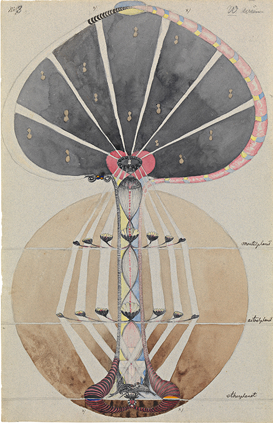
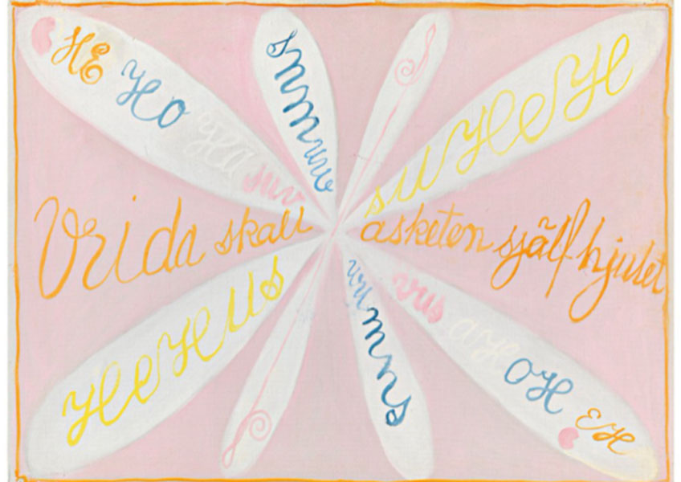
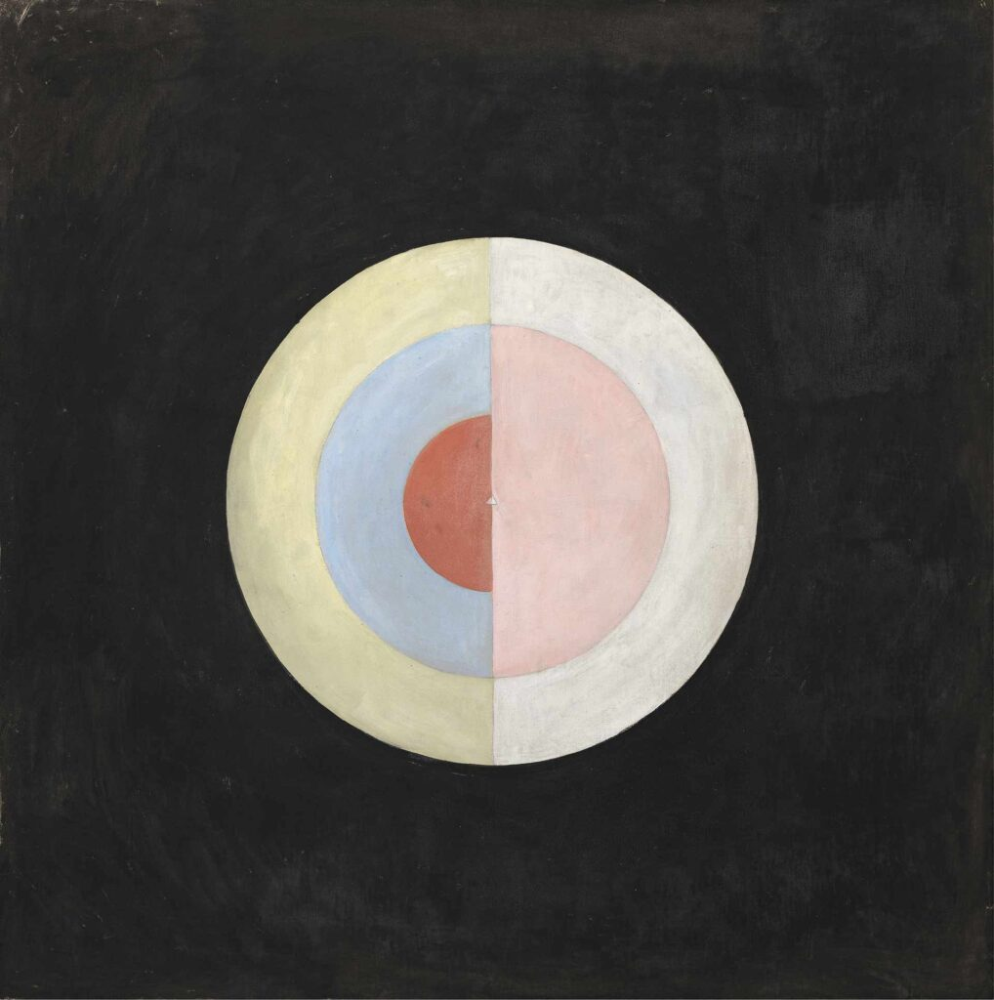

Cómo realizaba sus obras
Su objetivo era mirar trascendiendo lo material para representar energías y fuerzas de cielos y tierra que, sin la pintura, quedarían ocultas.
Mientras Kandinsky, Mondrian y otros abstractos contemporáneos buscaban un arte no representativo sin alusiones al mundo conocido, Af Klint combinaba signos geométricos como parte de un código del conocimiento, orientada a transmitir mensajes más que a crear abstracción.

Hilma af Klint, Grupo 2, Sin título, No. 14a–No. 21, 1919.
Simbolismo y series
Guiada por la idea teosófica de volver a una unidad más allá de las dualidades, inició su camino con Caos primordial: veintiséis pequeños óleos dominados por el verde, el amarillo y el azul (vinculados a lo femenino, lo masculino y los elementos vitales de tierra, luz y agua), junto a espirales, rayos de luz y letras como la U (reino espiritual) y la W (mundo material).
En 1907 emprendió Los diez más grandes, diez obras de gran formato en témpera sobre papel montado sobre lienzo que abordan el ciclo de la vida humana -infancia, juventud, edad adulta y vejez- mediante formas biológicas, discos entrecruzados y color.

Hilma af Klint, Árbol de la Sabiduría, No. 3, 1915. 45.7 x 29.5 cm
- Hilma af Klint. The WU/Rose Series Group II, The Eros Series, No. 5, 1907. Fundación Hilma af Klint, Estocolmo.
- Hilma af Klint. El cisne, n.º 16, Grupo IX/SUW (The Swan, No. 16, Group IX/SUW), 1915. Moderna Museet, Estocolmo.


Podés ver más obras de Hilma af Klint en nuestra colección.
Ir a la galería